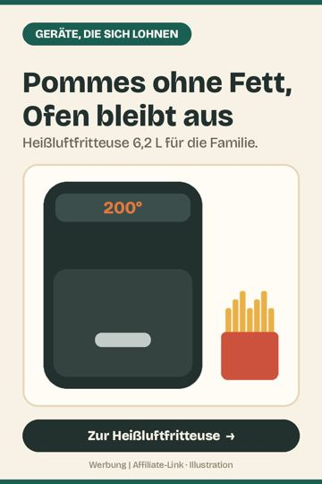
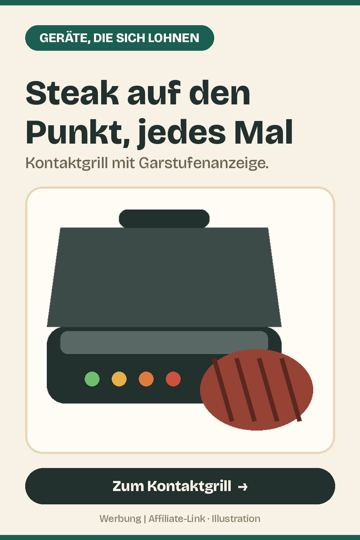
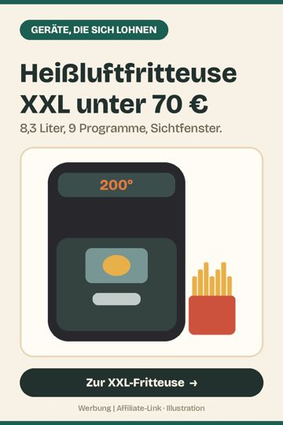
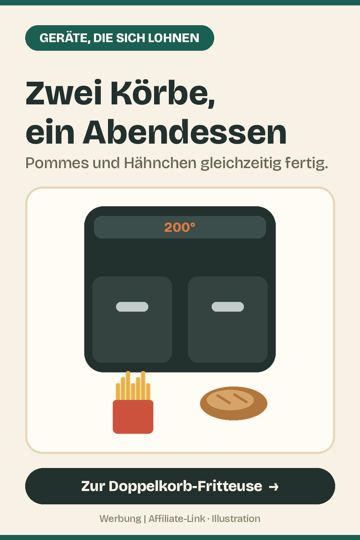

Größere Küchengeräte von 50 bis 150 Euro, die im Alltag oft genutzt werden. 4 Helfer, ausgewählt nach Nutzen im Alltag und vielen guten Kundenbewertungen.

Pommes ohne Fett, Ofen bleibt aus
Pommes, Hähnchen und Gemüse knusprig mit fast keinem Öl, in der Hälfte der Ofenzeit. 6,2 Liter reichen für 4 Personen, Korb spülmaschinenfest.
Bei Amazon ansehen *
Steak auf den Punkt, jedes Mal
Der Grill misst die Dicke des Fleischs und zeigt die Garstufe an: blutig, medium, durch. 6 Programme, Platten spülmaschinenfest.
Bei Amazon ansehen *
Heißluftfritteuse XXL unter 70 €
Ein ganzes Hähnchen oder Pommes für die ganze Familie: 8,3 Liter Korb, 9 Programme, Fenster zum Reinschauen.
Bei Amazon ansehen *
Zwei Körbe, ein Abendessen
Zwei Körbe mit eigener Temperatur und Zeit, Sync-Funktion macht beides gleichzeitig fertig. 9 Liter gesamt, spülmaschinenfest.
Bei Amazon ansehen *Kostenloser Premiumversand, Prime Video inklusive, jederzeit kündbar. Praktisch vor Black Friday und Weihnachten.
Prime gratis testen *